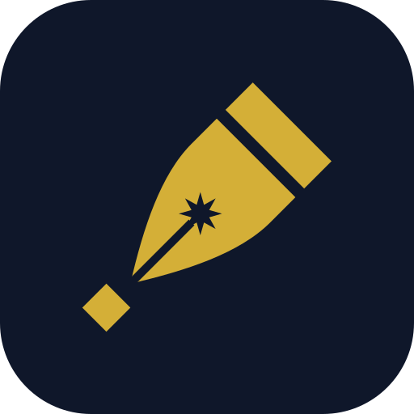

The pen, and the dot it leaves
Qalam (قلم · Калам) means "pen" in Arabic, Persian and Uzbek. It is the tool of contracts, accounts and knowledge, and it is honoured across the Islamic world (Surah al-Qalam).
Below the nib sits the nuqta, the diamond-shaped dot a calligrapher's qalam makes. Calligraphers use the nuqta as the unit for measuring every letter. In our mark it stands for precision, the measure behind every tax position, audit opinion and structure we deliver. The eight-point star in the nib comes from the tilework of Samarkand and Bukhara.